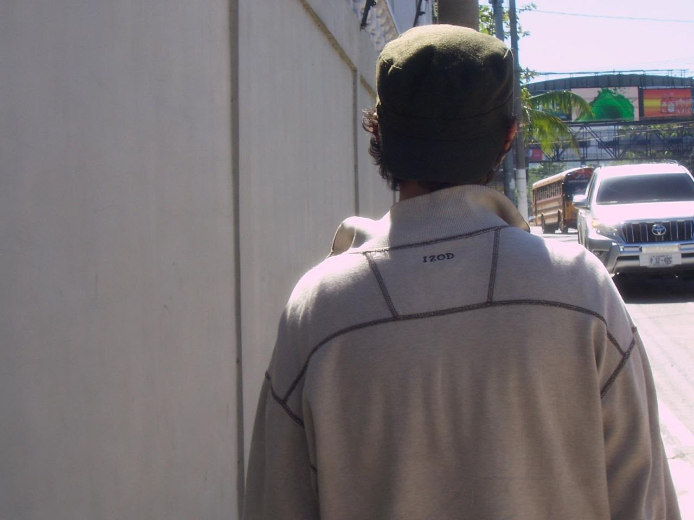
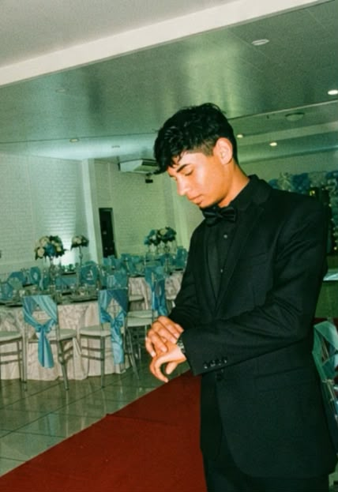

PetHome nació porque vimos que muchas mascotas no encuentran hogar no por falta de amor, sino por falta de un lugar donde sus historias sean vistas. No somos una tienda: somos un puente entre refugios y familias.
Conectar refugios de animales con personas dispuestas a adoptar, centralizando la información en una sola plataforma confiable, para que ninguna mascota se quede sin la oportunidad de encontrar un hogar.
Ser la plataforma de referencia para la adopción de mascotas en El Salvador, reduciendo el abandono animal a través de la tecnología y la colaboración con refugios y rescatistas.
“No queremos que una mascota sea un producto más. Queremos que su nombre, su historia y su personalidad lleguen antes que cualquier botón de solicitud.”
No somos rescatistas de toda la vida, ni teníamos experiencia en refugios. Somos un equipo de desarrollo que, al empezar a crear este sistema, se topó con la cruda realidad: cientos de historias de mascotas dispersas en redes sociales, refugios saturados y personas que querían adoptar pero no sabían por dónde empezar.
Fue al conocer a los voluntarios y ver el esfuerzo diario de los refugios que nos enamoramos de la causa. No podemos rescatar perros de las calles, pero sí podemos usar nuestras habilidades para construirles un puente hacia una segunda oportunidad. PetHome nació de ese deseo: poner la tecnología al servicio de la empatía.

Estudiante
Amante de los Pugs y aprendiz de rescatista.

Estudiante
Siempre velando por el bienestar animal.
Ponemos en el centro el bienestar de las mascotas y de las personas que las adoptan.
Información clara y verificable entre refugios y adoptantes.
Un proceso de adopción claro, sin trámites innecesarios.